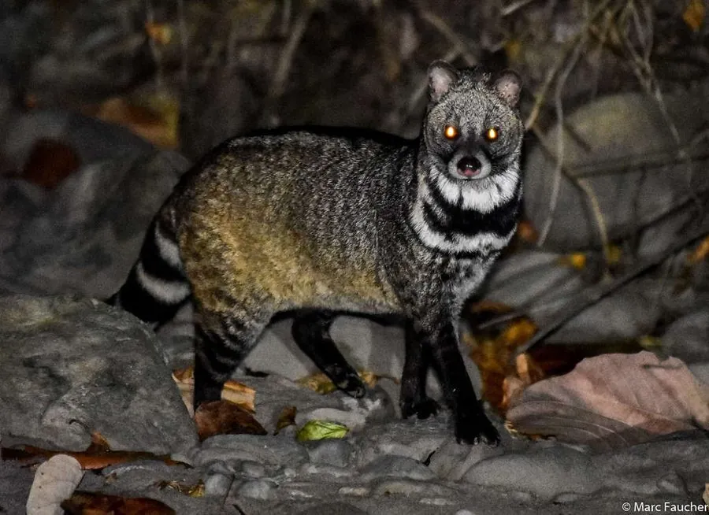

哺乳动物 · 动物界
大灵猫 Viverra zibetha

亚洲南部的灵猫科动物，体侧有黑斑、尾部有环纹，会用肛门腺分泌物标记领地，曾因香料贸易被广泛捕猎。
- 分类
- 门脊索动物门纲哺乳纲目食肉目科灵猫科属灵猫属
- 栖息环境
- 森林、灌丛与农田边缘，多在夜间活动
- 地理分布
- 中国南方、南亚和东南亚，从印度、尼泊尔到中南半岛
- 保护级别
- IUCN 无危（LC）；中国国家一级保护动物
物种志
大灵猫体长 0.7–0.95 米，尾长 0.3–0.45 米，体重 5–11 kg。它的身体细长，被毛为灰黄至黄褐色，颈侧和体侧有黑色斑点或条纹，背部有黑色鬃毛，尾部有黑白相间的环纹；面部有白色和黑色斑纹，四肢较短。
大灵猫分布于中国南方、南亚和东南亚的森林、灌丛和农田边缘，从印度、尼泊尔到中南半岛。它以鼠类、鸟类、蛙类、蛇、昆虫和果实为食，多在夜间单独活动，善攀爬和游泳，领地以肛腺分泌物标记。大灵猫的肛腺分泌物曾被称为“灵猫香”，用于配制香料和中药，因此长期遭到捕猎和饲养利用。雌性妊娠期约 70–80 天，每胎 2–4 仔。由于捕猎和栖息地破坏，大灵猫数量下降，中国将其列为国家一级保护动物。
形态与习性
- 食性鼠类、鸟类、蛙类、蛇、昆虫与果实
- 体长0.7–0.95 m，尾长 0.3–0.45 m
- 体重5–11 kg
- 寿命野外约 10–15 年
- 繁殖妊娠期约 70–80 天，每胎 2–4 仔
- 活动节律夜间单独活动
- 肛腺分泌物曾用于配制香料和中药
趣味知识
- 大灵猫的肛腺分泌物曾被称为“灵猫香”，用于香料和中药。
- 它体侧有黑色斑点，尾部有几道黑白相间的环纹。
- 大灵猫善攀爬和游泳，多在夜间单独活动。
- 因长期捕猎，中国将大灵猫列为国家一级保护动物。